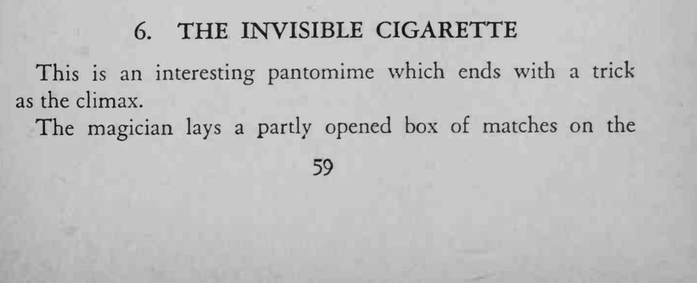
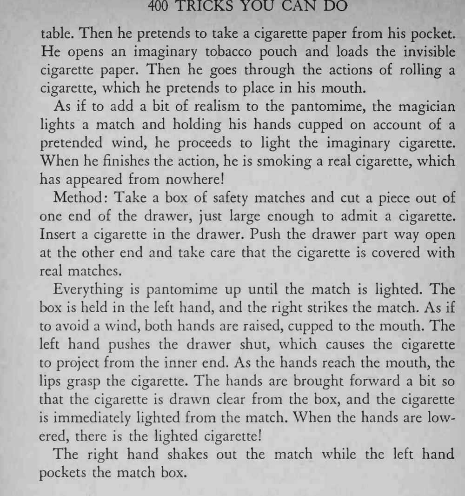

魔术师凭空卷了一支看不见的香烟，用火柴点上，最后竟真的抽起了一支烟。
左手推盒与嘴唇衔烟必须同时完成；哑剧演得越像，最后越惊人。


This is an interesting pantomime which ends with a trick as the climax. The magician lays a partly opened box of matches on the table. Then he pretends to take a cigarette paper from his pocket. He opens an imaginary tobacco pouch and loads the invisible cigarette paper. Then he goes through the actions of rolling a cigarette, which he pretends to place in his mouth. As if to add a bit of realism to the pantomime, the magician lights a match and holding his hands cupped on account of a pretended wind, he proceeds to light the imaginary cigarette. When he finishes the action, he is smoking a real cigarette, which has appeared from nowhere! Method: Take a box of safety matches and cut a piece out of one end of the drawer, just large enough to admit a cigarette. Insert a cigarette in the drawer. Push the drawer part way open at the other end and take care that the cigarette is covered with real matches. Everything is pantomime up until the match is lighted. The box is held in the left hand, and the right strikes the match. As if to avoid a wind, both hands are raised, cupped to the mouth. The left hand pushes the drawer shut, which causes the cigarette to project from the inner end. As the hands reach the mouth, the lips grasp the cigarette. The hands are brought forward a bit so that the cigarette is drawn clear from the box, and the cigarette is immediately lighted from the match. When the hands are lowered, there is the lighted cigarette! The right hand shakes out the match while the left hand pockets the match box.